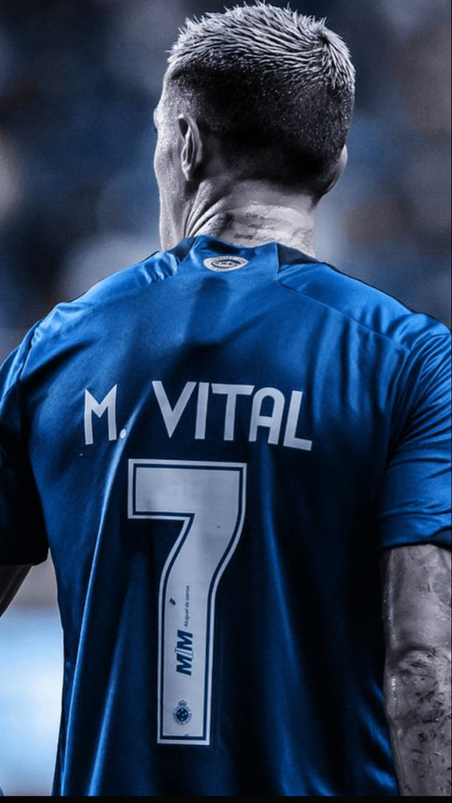

Cruzeiro Esporte Clube
História:
Conquistas:
Estádio:
Torcida:
Rivais:
Momento Atual:
Jogadores:
História e Fundação:
- Fundação: O Cruzeiro foi fundado em 2 de janeiro de 1921, na cidade de Belo Horizonte, Minas Gerais, Brasil. Seu nome foi escolhido em homenagem à constelação do Cruzeiro do Sul.
- Cores e Mascote: As cores do clube são azul e branco, e sua mascote é a raposa, que se tornou um símbolo importante do clube.
Conquistas:
- Títulos Nacionais: O Cruzeiro é um dos clubes mais bem-sucedidos do Brasil, tendo conquistado várias vezes o Campeonato Brasileiro, a Copa do Brasil e a Copa dos Campeões.
- Títulos Internacionais: O clube também tem um histórico de sucesso internacional, com títulos como a Copa Libertadores da América e a Supercopa Libertadores.
Estádio:
- Mineirão: O Cruzeiro manda seus jogos no Estádio Governador Magalhães Pinto, conhecido popularmente como Mineirão. Localizado em Belo Horizonte, o estádio é um dos maiores e mais importantes do Brasil.
Torcida:
- Torcida Organizada: A principal torcida organizada do Cruzeiro é a Máfia Azul, conhecida por sua paixão e apoio incondicional ao clube.
Rivais:
- Atlético Mineiro:Atlético Mineiro: O principal rival do Cruzeiro é o Atlético Mineiro, outro clube de Belo Horizonte. Os jogos entre os dois clubes são conhecidos como "clássico mineiro" e são sempre muito disputados e carregados de rivalidade.
Momento Atual:
- Desafios Recentes: Nos últimos anos, o Cruzeiro tem enfrentado dificuldades financeiras e administrativas, o que afetou seu desempenho em campo. Em 2019, o clube foi rebaixado para a Série B do Campeonato Brasileiro pela primeira vez em sua história.
- Reconstrução: Desde então, o clube vem passando por um processo de reconstrução, buscando se reerguer e retornar ao seu lugar de destaque no futebol brasileiro.
- Apesar das dificuldades recentes, o Cruzeiro continua sendo um dos clubes mais importantes e respeitados do futebol brasileiro, com uma história rica em conquistas e uma base sólida de torcedores apaixonados.
Alguns jogadores do Cruzeiro:
